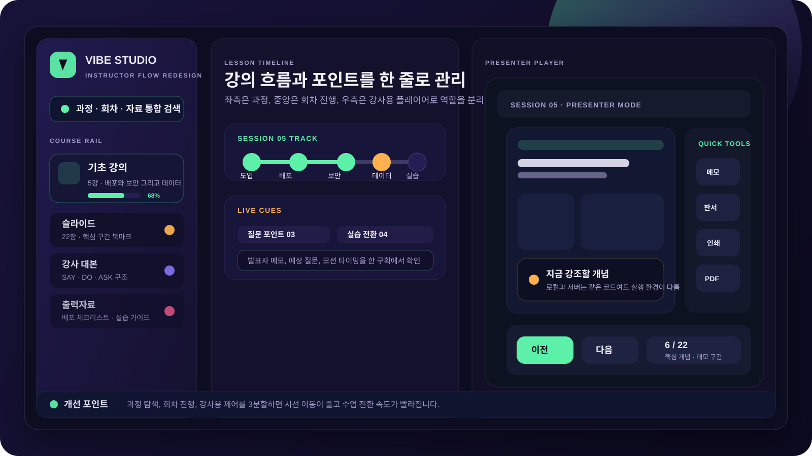
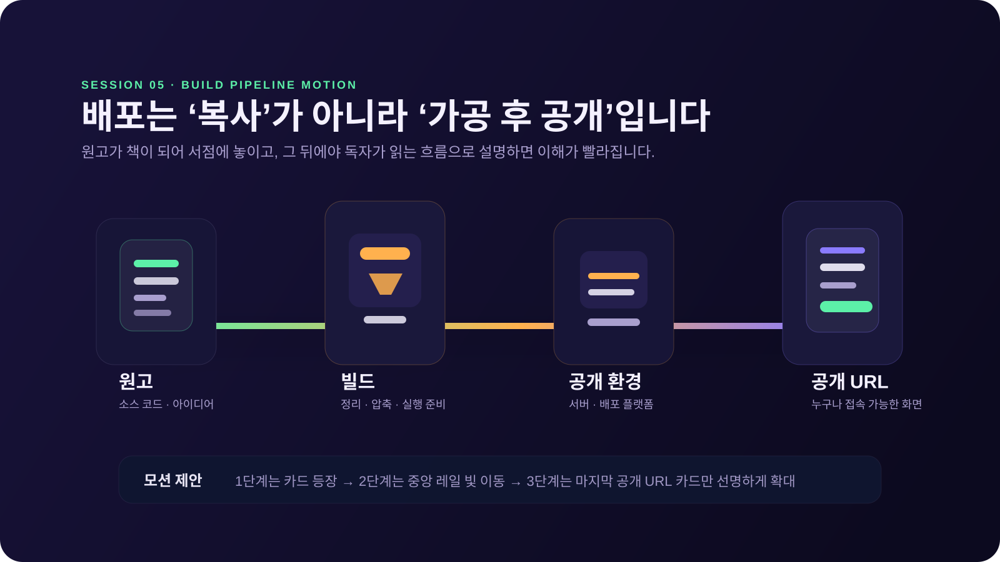
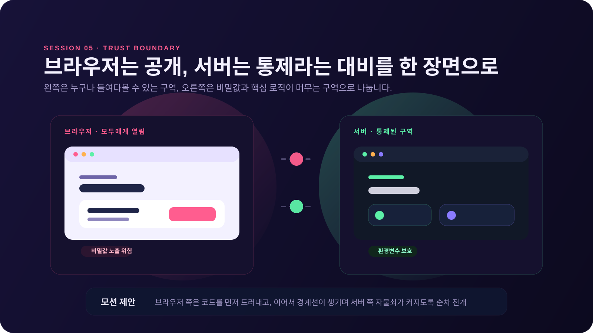
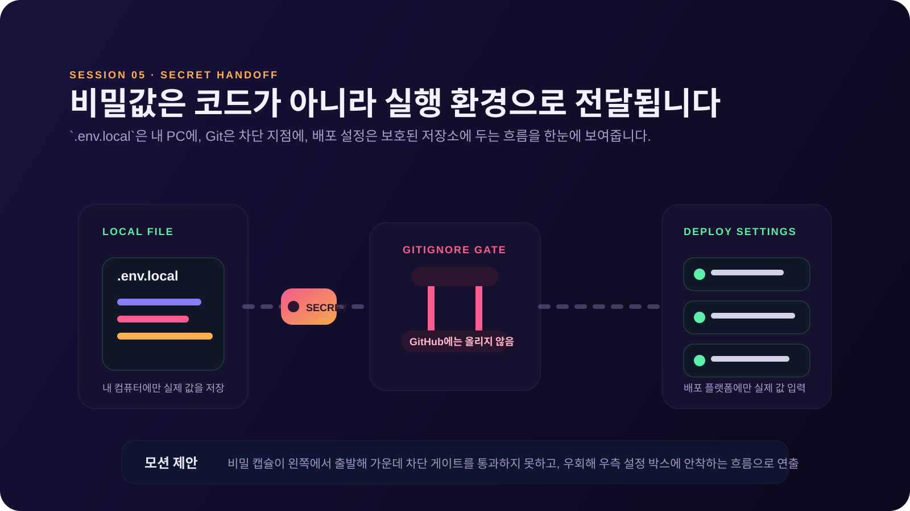
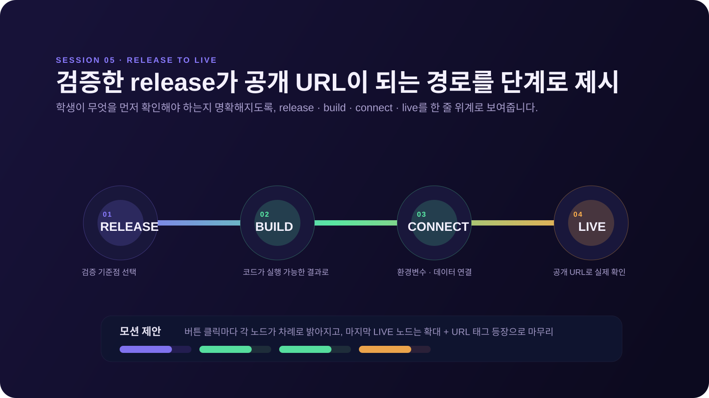

1. 왼쪽 레일은 “과정 목록”이 아니라 “운영 시작점”으로
현재 레일은 탐색 중심입니다. 여기에 회차 진행률, 자료 종류, 빠른 검색 진입을 먼저 노출하면 강사가 수업 도중 헤매지 않습니다.
회차 진행률
자료 종류 배지
검색 우선 배치
현재 5강은 내용 구조와 설명 흐름이 이미 탄탄합니다. 그래서 전면 교체보다, 강사의 시선 이동을 줄이는 UI 재정리와 보안·배포 개념을 상징적으로 잡아주는 다이어그램 자산 추가가 가장 효율적인 개선입니다.

현재 앱 구조인 `course-rail`, `lesson-pane`, `detail-pane`, `player`, `notes-panel`을 기준으로, 강의 운영 효율을 높이는 방향만 추려 정리했습니다.
현재 레일은 탐색 중심입니다. 여기에 회차 진행률, 자료 종류, 빠른 검색 진입을 먼저 노출하면 강사가 수업 도중 헤매지 않습니다.
강의 리스트를 단순 나열하기보다 도입·배포·보안·데이터·실습 단위로 묶어 보여주면, 현재 어느 맥락에 있는지 즉시 파악할 수 있습니다.
슬라이드 보기와 메모·판서·인쇄·PDF 버튼이 함께 있으므로, 이 영역은 학습자 화면이 아니라 강사의 조정실처럼 보여야 합니다.
지금의 딥 인디고 기반 컬러와 네온 틸, 앰버, 코랄 포인트는 이미 훌륭합니다. 다만 시각 위계만 조금 더 정리하면 “문서형 강의 슬라이드”에서 “설명형 인터랙티브 강의”로 질감이 올라갑니다.
아래 자산들은 사진이 아니라 벡터 다이어그램 형태로 구성했습니다. 그래서 확대, 분해 등장, 라인 드로우, 포인터 강조 같은 모션을 얹기 쉽고, 현재 슬라이드의 기술 교육 톤과도 자연스럽게 이어집니다.

원고 → 빌드 → 공개 환경 → 공개 URL 흐름을 한 줄로 설명하는 자산입니다. `배포는 복사가 아니라 가공 후 공개`라는 메시지를 강화하는 데 적합합니다.

왼쪽은 모두에게 열려 있는 브라우저, 오른쪽은 통제된 서버로 나눠 표현했습니다. `브라우저에 내려간 것은 공개`라는 문장을 훨씬 빠르게 이해시킵니다.

로컬 파일, Git 차단 지점, 배포 설정으로 이어지는 비밀값 이동 경로를 단순하게 잡았습니다. `.env.local`, `.gitignore`, 배포 설정의 관계를 설명할 때 매우 유용합니다.

검증 기준점, 빌드, 연결, 공개 URL의 단계성을 명확히 보여줍니다. 학생이 공개 전 무엇을 확인해야 하는지 정리하는 마무리 슬라이드에 특히 잘 맞습니다.
시간 대비 효과가 큰 순서대로 적용하면 아래 순서를 권장합니다.
이 프로젝트는 이미 내용 품질이 높기 때문에, 핵심은 “더 많이 꾸미기”가 아니라 강사용 화면의 조작 밀도를 정리하고, 5강의 추상 개념을 시각적으로 묶어주는 설명형 비주얼을 추가하는 것입니다. 그 두 가지만 적용해도 전체 완성도가 확실히 올라갑니다.